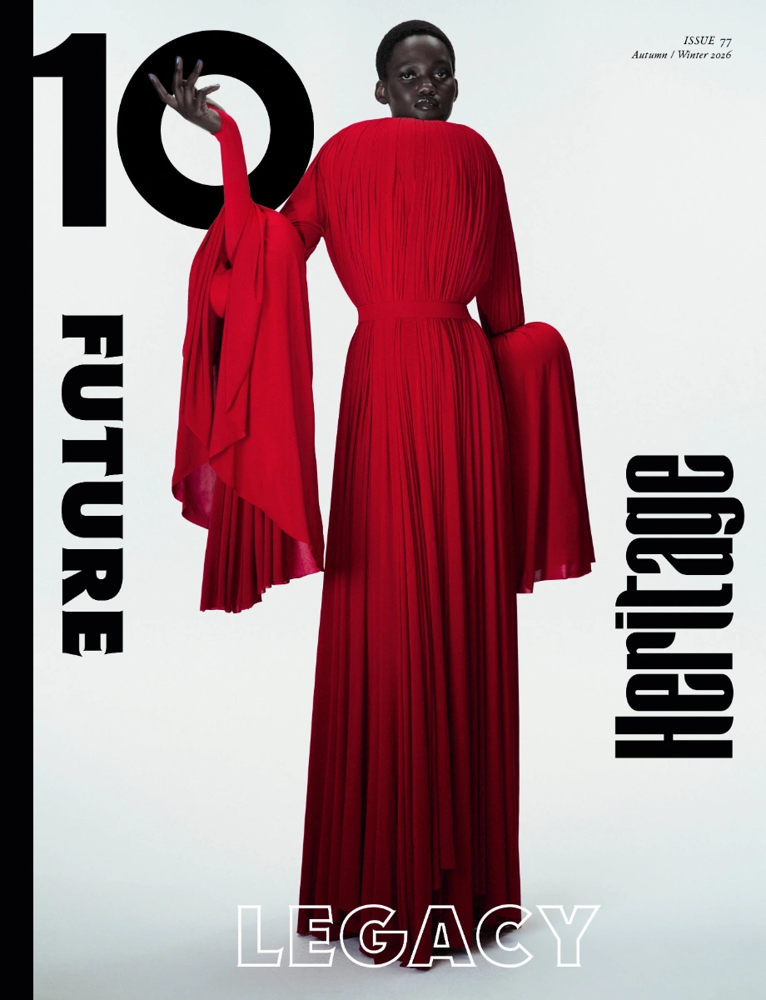
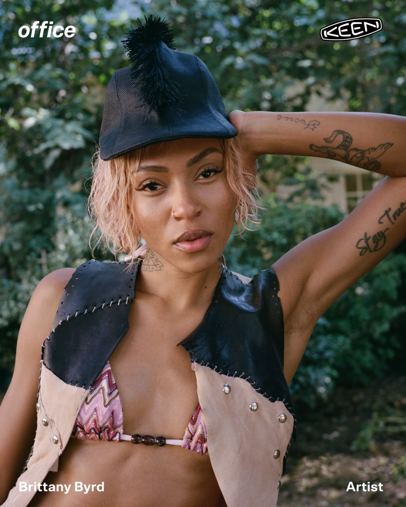
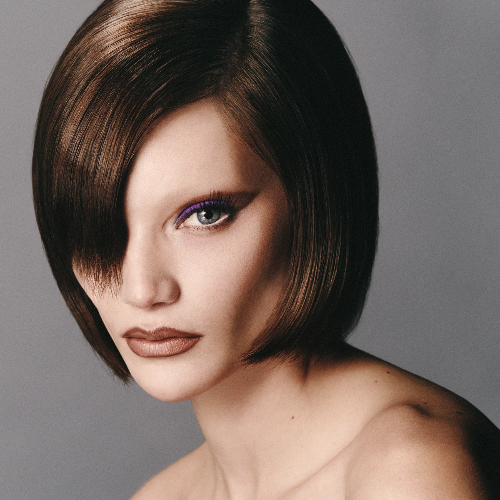
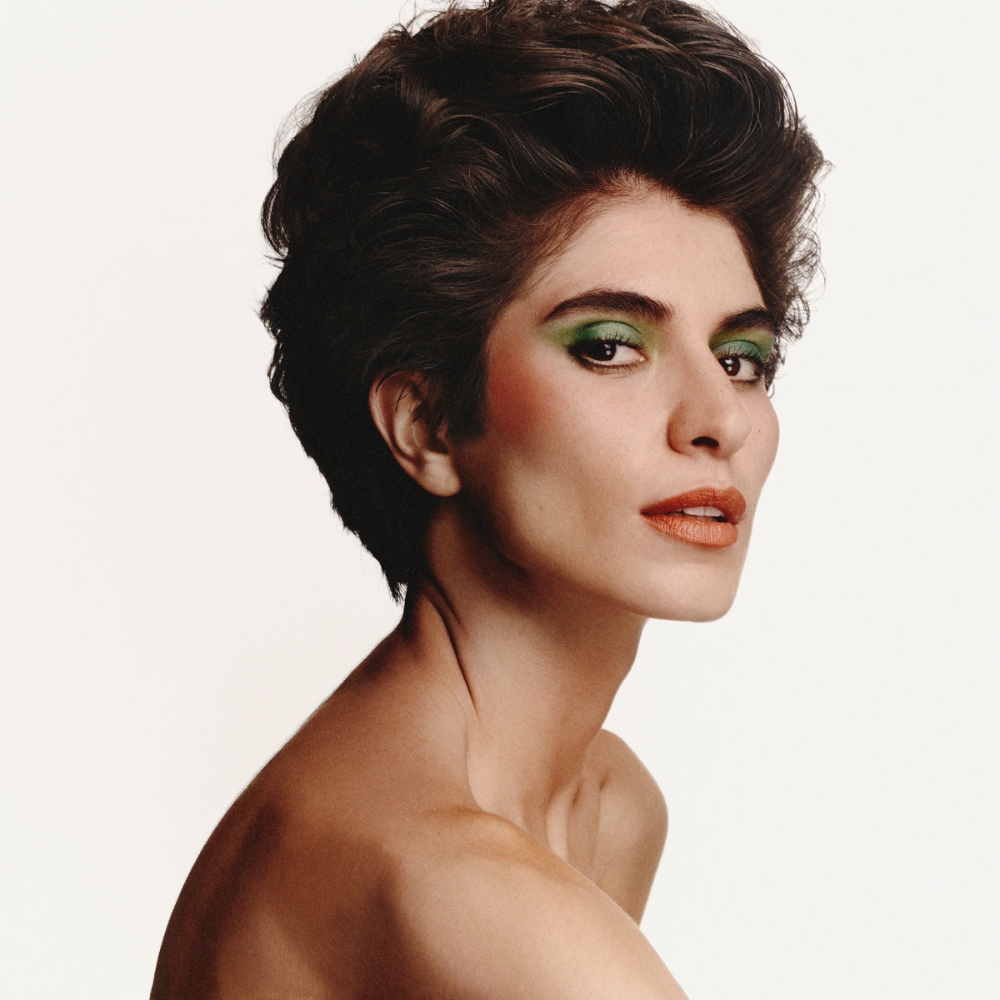
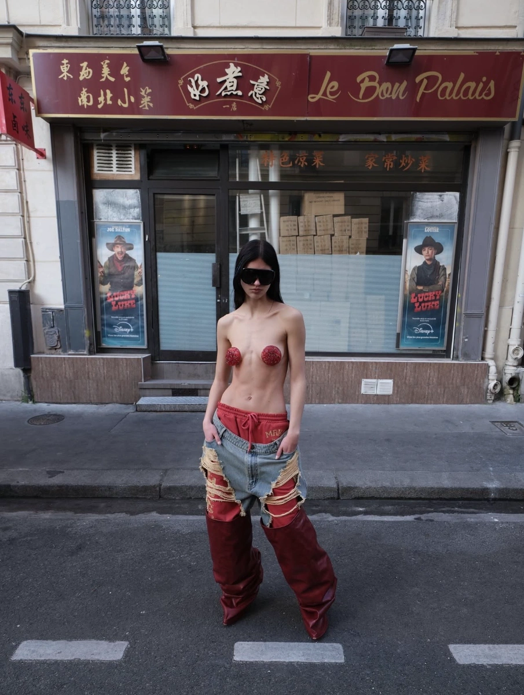
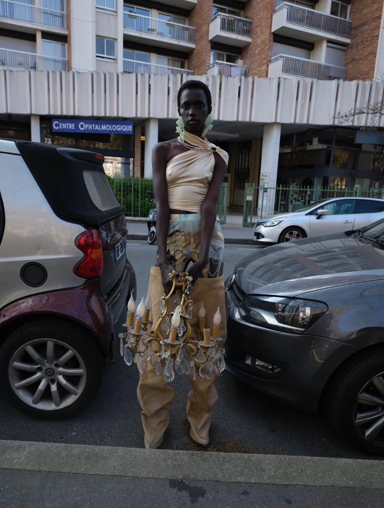
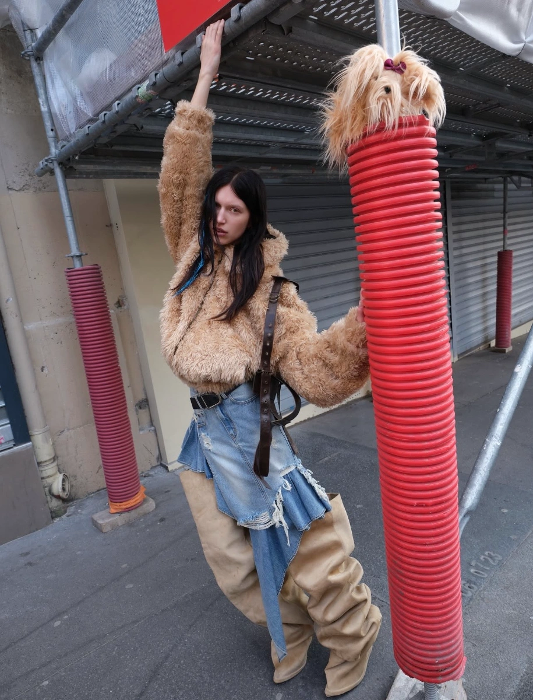
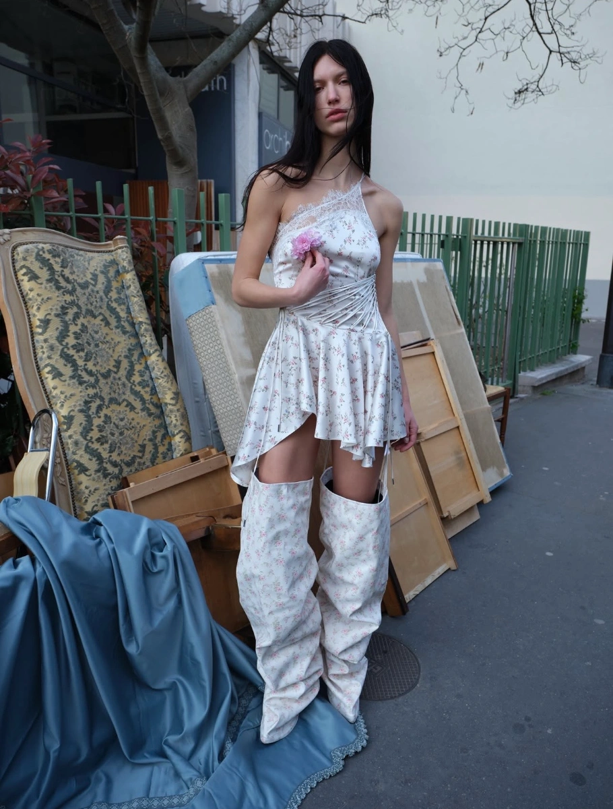

Natsuki Oneyama
MAKEUP ARTIST
Paris-based makeup artist creating refined beauty with a modern, image-driven sensibility. Working across fashion, beauty and commercial projects, his approach combines precision, restraint and a strong understanding of how makeup functions within the broader visual narrative of an image.
SELECTED CLIENTS /
GIVENCHY BEAUTY / YSL BEAUTY / CLARINS / ADIDAS / DELVAUX / SWAROVSKI / ARTHUS BERTRAND / VOGUE MEXICO / VOGUE ADRIA / NUMERO CHINA / NUMERO SWITZERLAND / NUMERO BERLIN / BEAUTY PAPERS / MODERN WEEKLY CHINA / REPLICA MAN / 10 MAGAZINE / PORT MAGAZINE / OFFICE MAGAZINE
SELECTED WORKS
Jesper Lund
OFFICE X KEEN

Antoine & Charlie
BEAUTY



Jérémie Monnier
BEAUTY PAPERS

Jumbo Tsui
MARRKNULL AW 26





KRZYSTOF JAN
Field Study, Madeira

Aude Le Barbey
PORT MAGAZINE

Ward Ivan Rafik
VOGUE MEXICO

CARLA ROSSI
NUMéRO CHINA